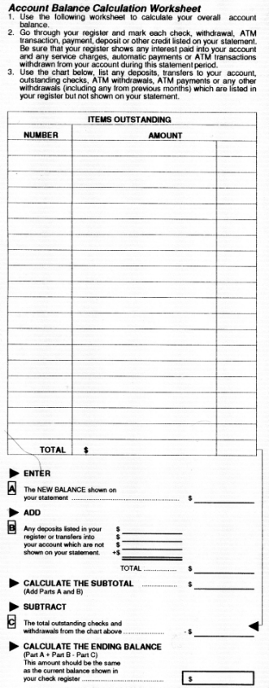
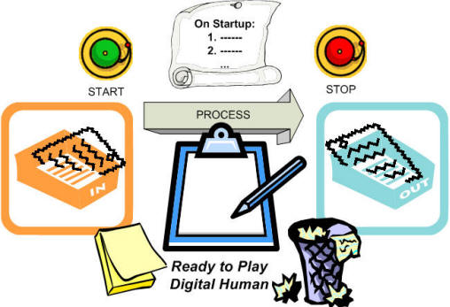
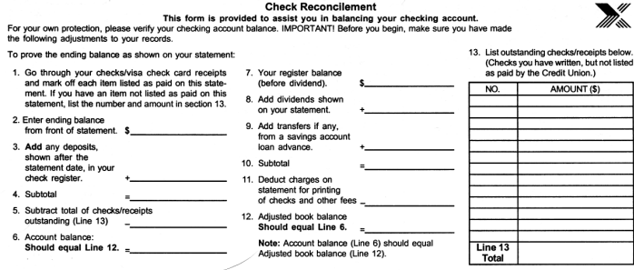

i051002
TROST
InfoNote
What Computers Know
But What's the Use?
|
|
i051002
TROST
InfoNote |
- Latest version: The latest version of this InfoNote is available on the Internet at
<http://TROSTing.org/info/2005/10/i051002b.htm>.- This version: 0.50 <http://TROSTing.org/info/2005/10/i051002e.htm> is an obsolete rough draft that has too much material for one article.
- Next version: 0.80 <http://TROSTing.org/info/2005/10/i051002f.htm> distills this down to enough for the basic question and leaves additional questions for other articles.
- Previous version: 0.25 <http://TROSTing.org/info/2005/10/i051002c.htm>.
Bill Anderson and I have a running conversation on the difference between what computers are and the use we make of them. We've explored that question for a long time, almost the full 30 years we've known each other. In recent buddy calls between Seattle and Rye, New York, it seems to us that much is starting to crystallize in our thinking. We want to expand this conversation onto our blogs and engage with others, out loud and on the record. My kick-off contribution is to draw together some of the themes that solidified as I researched the TROST project. Here's the sketch.
1. Computers and Embodied Knowledge
1.1 The Knowing Computer
1.2 Dumb Enough to Follow Instructions
2. Acting Like a Computer
2.1 A Digital-Human Program
2.2 Computer and Non-Computer Rôles
2.3 Instructing the Digital Human
3. What It Is ≠ What It's For
4. Answers Good and Not-So-Good: Calculation vs. Reality
5. Things to Notice, Things to Ponder
6. Resources and References
1.1.1 I want to inquire into what it is that a computer can be said to know.
1.1.2 I'm not considering that a computer has any form of sentience. I am using "knowing" in the sense of embodied knowledge, in the way that one speaks of embodied action (Denning 2002; Gladwell 2005). It's akin to our talking about what your wristwatch says the time is, as if the watch knows how to tell time, as if it knows the time.
1.1.3 I am using "knowing" in the sense that our male cat, Teh Amor, knows how to spring five feet in the air from a motionless crouch on the floor and straddle my shoulders, landing perfectly lightly with no harm to either of us (Devlin 2005). It is in the sense that we can imagine the cat knowing (in the sense of embodying) ballistics and calculus that I want to speak of a computer knowing something.
1.1.4 In particular, if the computer has some innate knowledge, in the way that Teh knows how to leap onto a high perch, what would it be?
1.2.1 Computers are commonly spoken of as dumb (that is, stupid) and only able to do what they are told. We could say that its conduct is mindless. This reassuring platitude, not heard so much lately, is both accurate and also quite marvelous. I want to take a different angle that doesn't overlook the marvelous part is not overlooked.
1.2.2 I want to look at the kind of thing a computer is doing when it is doing its thing. I will set aside how it does it, certainly not why it does it, but simply what it is doing.
1.2.3 This may give us a greater appreciation for just what it is that a computer is told that it carries out in its mindless, unerring way.
2.1.1 Every month my bank sends me a digital-human program along with some data. Let's take a look at that program to develop our sense of what it's like to "merely follow instructions," and exactly what kind of instructions those are (Fig. 1).
Figure 1. Some Digital-Human Software 
2.1.2 Back when I maintained my checkbook by hand, I would follow a procedure similar to the one shown. I would follow the drill and arrive at a number. Sometimes I would achieve agreement. Other times there would be a discrepancy. When electronic calculators became commonplace my error rate decreased and the overall process went more quickly. Now I let Microsoft Money figure it out from downloaded bank statements.
2.1.3 When performing manual reconciliations, I developed alternative ways of repeating the procedure when it didn't balance the first time: adding the list from bottom to top instead of top to bottom; adding up blocks of numbers, then adding all of the block totals; changing the order in which I reviewed my check book; and other variations such that if I had made an arithmetic error, I would be less likely to make it the same way again. I also verified all of the numbers once again, both on the bank statement and in my checkbook. Sometimes I had read the checkbook entry incorrectly. Also, the amount of the discrepancy often provided a clue for what to look for, such as an outstanding check that I failed to list.
2.1.4 It was rare to find a genuine discrepancy and it could be maddening when one did occur. I've never forgotten the occasion, over 35 years ago, when I failed to notice that the starting balance of the current month was different than the ending balance on the previous month's statement. A deposit had been credited to my account, but it wasn't accounted for by a line-item, and I couldn't figure out why I had too much money in the bank when I carried out the reconciliation procedure. I finally noticed the statement discrepancy. I was extra-watchful in the next few months to see if it happened again or if the deposit was finally acknowledged. There were no more hiccups and the silently-included deposit never did appear on any statement.
2.2.1 Look at the reconciliation worksheet and notice its miniscule rôle in the drama narrated in the preceding section.
2.2.2 It is important to understand that the digital-human part, the part specified in the worksheet instructions, is only a small part of what I as the user of the procedure am engaged in. In particular, the worksheet instructions say nothing whatsoever about what to do if the calculated ending balance disagrees with my check register balance.
2.2.3 The digital-human part is rote and mechanical (although designed to expose mechanical errors because the procedure is indeed being performed by a human being). It depends on the correct entry and manipulation of numbers and that is all. It does not depend on facts other than that.
2.2.4 When there is a discrepancy, the procedure cannot provide advice because there are no facts in evidence on which to base any recommendation.
2.2.5 As the human observer of my digital-human activity, I can verify the data and the calculation. If discrepancy persists and is consistent, I must look elsewhere for the source of error. It is fruitless for the author of the procedure to presume where that might be. (This does not deter software producers from taking liberties in this regard and presenting speculations as designed-in facts, but that's another story.)
2.2.6 Because a person is playing computer and is also the one having a purpose for carrying out the procedure, it may be difficult to separate out the rote procedural part and recognize how purposeless it is when taken by itself. This is important to appreciate, because it is part of the marvel and mystery of computation.
2.3.1 To understand better what little a computer might know, we are going to take away everything a computer cannot know and see what's left. It will be set up as the story of a prisoner in a locked room.

Figure 2. Setup for Playing Imprisoned Digital Human2.3.2 Playing the Digital-Human Game. There is a simple procedure that is followed every time (Table 1):
Table 1. Digital-Human Play Action (simplified)
1. Suddenly, the Green light is flashing and a bell is ringing.
2. In front of you is a list of instructions written as elements in a fixed code, like a restricted, private language.
3. You progress through the instructions and carry out the actions specified in the code. You know exactly what to do. You've always known.
4. The only actions that the instructions can specify are for manipulating elements just like those of coded instructions:a. move an element from the in-slot to a scratch-pad
b. move an element from a scratch-pad to the out-slot
c. transform an element and put the result on a scratch-pad
d. take the element on a given scratch-pad as the next instruction of the program, continuing from theree. inspect an element and skip the next instruction if a particular condition is satisfied
5. Suddenly, the red light is flashing and a bell is ringing. Everything stops. Nothingness.
6. Suddenly, the green light is flashing and a bell is ringing ...2.3.3 Computer programmers and scientists will notice that the description is a bit oversimplified, omitting some important housekeeping (such as keeping track of and re-using the scratch-pad sheets). There is enough to make the key point. This mind-numbing experience is no problem for the digital-human. As a computer, it is all there is. There is nothing else to be concerned about. That there could even be anything else is beyond its ken.
2.3.4 The challenge of instruction. As the instructor of the computer, all you can do is signal start and provide coded elements at the input slot and record the elements that appear at the output slot. You can stop the computer. These are the only actions available to you. Your interaction with the computer is extremely limited (Table 2):
Table 2. Restrictive Interaction with the Computer
1. You can't tell it what you want.
2. You can only tell it what to do.
3. You can only use what it is already able to do.
4. You must communicate in a fixed code of elements that area. all it can accept as input,
b. all it can act upon and employ in its operations,
c. all it can report as output results
5. There's nothing that it can do in its world that has any bearing on your world except by coincidence.
6. Why you're having it do what it does is unknowable to it.2.3.5 This is the fundamental relationship between computers and those who instruct them or employ them as instruments in something else (such as reconciliation of a bank statement).
2.3.6 This is enough, along with astounding progress in electronics and computer software, to accomplish everything that we have achieved since the commercial introduction of the modern digital computer barely 55 years ago (Winegrad & Akera 1996). Nothing we know to do has altered the basic approach sketched here.
3.1.1 At this point, I encourage review of the situation portrayed in section 2.1, A Digital-Human Program. Notice how little is actually explained in the "Account Balance Determination Worksheet" of (Figure 1).
3.1.2 Also notice the alternative ways the procedure might be expressed, illustrated by another form I receive every month (Figure 3):
Figure 3. Alternative Statement Reconciliation Procedure 
3.1.3 Notice that the procedures are expressed using some of the tacitly-understood terms that apply in the banking industry and that might not make much sense to someone with no accounting training or experience (e.g., the use of "reconcilement" and "prove" in Figure 3).
3.1.4 Also notice that the two forms carry different assertions about the purpose of the procedure: "to prove the ending balance as shown on your statement" in Figure 3 versus "calculate your overall balance" in Figure 1. Later, I'll explain why I think the second confuses formality and reality in much the same way that happens when computer programs are offered as solutions to our problems.
{Author Note: This section moves to what programmers know, and I won't be using it here. Instead, we can build up this diagram and its interpretation more slowly and with more foundation.}
Figure 4. What It Is, What It Is For (seriously-abstracted)
In this characterization, the only "meaning" to the computation, in the context of the computer, is simply what it does. Not what it's for. Here the computer is a pure "doer," a machine.
We are now close to being able to consider what a computer knows. We'll look at what a computer (program) can't know, and we will
The digital-human need have no concern for, nor even knowledge of, the intended purpose served by the calculation in order to carry it out. Let's look at that. The digital-human, under the conditions described, has no basis for inferring what the procedure is for.
{Author Note: Include a refinement of this piece.}
When the procedure is being applied in reconciling a bank statement and a checkbook, uncovering a discrepancy is important. When there is no discrepancy, does that mean all is right with the world? Not necessarily.
First, with regard to the procedure itself, there is the possibility of compensating errors that have the calculated ending balance agree with the checkbook, or be very close. I have had paired erroneous entries that balanced each other out. I only noticed because I was looking for a penny and I found a bigger discrepancy. The compensating error was not dangerous, because ultimately the status of funds in the bank was not impacted.
How about as a picture of reality? Does successful reconciliation mean that everything is in order and there will be no problems? Not necessarily.
Although the procedure predicts the ending-status of the account when all outstanding transactions are completed, it does not indicate whether an overdraft condition may occur -- may have already occurred -- depending on the order in which deposits and checks clear the bank. The procedure does not provide any assurance in the matter. It does not deal with cash flow in any way. These days, checks are cleared (or their amounts reserved) very quickly, and it is dangerous to count on a deposit to arrive like the cavalry in time to save the day. These days, it is also possible to review account activity on-line and by telephone to automated response systems. People I know check their accounts regularly when the balance is dangerously close to zero.
There are other real-life factors that the procedure does not address. Any outstanding deposits consisting of payments by check may be returned from the payer's bank because of insufficient funds or any other reason. Suddenly, not only is the presumed state of the account incorrect, there will be unexpected charges if the bank imposes a fee for failed deposits, not just for your own overdrafts. And that means I may be bouncing one or more checks and I will be assessed the even-larger overdraft fees. The spiral continues until I get wind of the situation and find a way to prevent further overdrafts. Banks in the United States offer special protection against this situation, but having gone decades between overdrafts, I never think to arrange it.
The point is that the procedure provides only a hypothetical prediction of the account's status, even when there are no errors of calculation and the reconciliation is successful. What the computer "knows" is how to carry out the calculation it is instructed to perform. There is no guarantee that the theoretically-justified result will have anything to do with the actual course of events, despite the fact that the result is dependable most of the time.
{AuthorNote: Don't know if I'll bother with this here, in the first published version. Might add it as a separate commentary page too.}
Could we put layers on top of layers and
The simplifications made for focus and to have the illustrations stand out.
Almost-arithmetic.
Could something else emerge. Perhaps.
But for now, it is not clear how a computer complex will have enough presence and awareness at the scale of human existence, to interact with the world as something experienced.
Until that interesting event, let's stick with the notion that computers will continue to be instructed by programs in machine language and that these programs, at no matter how many levels of remove, are written by people in a way that what the computer does and what the program is serves a human purpose that is external to and afforded with that.
{Author Note: Distill these down to only what is needed for here, without the anecdotal stuff, which belongs elsewhere. Some of this goes with what programmers know and is not needed here.}
- Bratman, Harvey (1961).
- An Alternate Form of the "UNCOL Diagram." Comm. ACM 4, 3 (March 1961), 142. Available at <http://doi.acm.org/10.1145/366199.366249>. A more-extensive formalization was later developed in (Early & Sturgis 1970).
The search for a Universal Computer Oriented Language (UNCOL) began in 1958 as a way to reduce the complexity of migrating programming languages onto different machines (Strong, et.al.). Thus began the long and circuitous march of programming-system technology toward formulation of .NET, the Common Language Infrastructure, and its Common Intermediate Language (CIL). I omit Java from the apostolic succession here for the simple reason that the UNCOL effort rejected the idea of one programming language for all machines as a viable solution.
Harvey Bratman provided a brilliant diagramming technique for characterizing the creation of programs using computers followed by subsequent execution of those programs to create further programs, and so on. This was of immeasurable value in being able to grasp and visualize all of the moving parts and the conditions that have to be preserved in bootstrapping implementations of programming languages atop others and across platforms. The diagrams provide serious purchase on what, in using UML (OMG 2005, Chapter 10), are hinted at by "execution architecture" and "deployment," and that is part of my motivation for reincarnating the Bratman diagram here.
Although I have gleefully used Bratman diagrams over the years, something has nagged at me almost from the moment that the article appeared. I'm bothered by the failure to distinguish between: (1) the function that is achieved versus the procedure that is followed, (2) procedures and the expressions of them, and (3) expressions of procedures versus the mechanical behavior that realizes conduct of the procedures. Although those confusions might be thought harmless, I am concerned that we have missed something essential by not teasing apart the distinct concepts. The current appraisal of "What Computers Know" and its sequel on "What Programmers Know" is my effort to lay that concern to rest. Careful creation of a consistent architectural formalism that manages the separation will be undertaken in completing TROST InfoNote i051001: Execution Architecture.
- Brooks, Frederick P., Jr. (1995)
- The Mythical Man-Month: Essays on Software Engineering. Anniversary edition with four new chapters. Addison-Wesley Longman (Boston: 1975, 1995). ISBN 0-201-83595-9 pbk.
- Cunningham, Ward (2004).
- Ward Cunningham–Is There a Revolution Coming in the Way People Communicate? Interview, The Videos, Channel 9 Forums, MSDN, updated 2005-08-18 at <http://channel9.msdn.com/Showpost.aspx?postid=8864#8864>.
- Denning, Peter J. (2002)
- Career Redux. The Profession of IT, column, Comm. ACM 45, 9 (September), 21-26. Available at <http://doi.acm.org/10.1145/567498.567516>. Also at <http://www.cne.gmu.edu/pjd/PUBS/CACMcols/>.
- Devlin, Keith (2005).
- The Math Instinct: Why You're a Mathematical Genius (along with Lobsters, Birds, Cats, and Dogs). Thunder's Mouth Press, New York. ISBN 1-56025-672-9.
- Early, Jay., Sturgis, Howard (1970).
- A formalism for Translator Interactions. Comm. ACM 13, 10 (October 1970), 607-617. Available at <http://doi.acm.org/10.1145/355598.362740>.
- Gladwell, Malcolm (2005).
- Blink: The Power of Thinking Without Thinking. Little, Brown and Company, New York. ISBN 0-316-17232-4.
- Hamilton, Dennis E. (2004)
- Ward Cunningham - Revolution in Communication. Orcmid's Lair (web log), 2004-05-28. Available at <http://orcmid.com/blog/2004/5/ward-cunningham-revolution-in.asp>
- MacKenzie, Donald (2001).
- Mechanizing Proof: Computing, Risk, and Trust. MIT Press, Cambridge MA. ISBN 0-262-13393-8.
- Norman, Donald A. (1998)
- The Invisible Computer: Why Good Products Can Fail, the Personal Computer Is So Complex, and Information Appliances Are the Solution. MIT Press, Cambridge, MA. ISBN 0-262-14065-9.
- Object Management Group (2005).
- Unified Modeling Language: Superstructure, version 2.0. Object Management Group specification, document formal/05-07-04, Object Management Group, Bedford, MA (August 2005). Available in PDF format at <http://www.omg.org/technology/documents/formal/uml.htm> accessed 2005-11-13.
- Strong, J., Wegstein, Joseph., Tritter, A., Olsztyn, J., Mock, Owen., Steel, Thomas B.,Jr. (1958)
- The Problem of Programming Communication with Changing Machines: A Proposed Solution. Report of the Share Ad-Hoc Committee on Universal Languages, Part 1. Comm. ACM 1, 8 (August 1958), 12-18. Available at <http://doi.acm.org/10.1145/368892.368915>.
The last time I saw Tom Steel (at an OODB meeting in Anaheim), I taunted him a little by saying I remembered UNCOL. He conceded the sins of his youth and we both laughed. I'm not so sure which of us was the most surprised, later on, to see the difficulties of UNCOL largely overcome at last by Moore's Law and the Common Language Infrastructure. I had thought that it would take something like Peter Landin's applicative-language functional-programming approach, but the 80-20 rule apparently demands less than that.
- Winegrad, Dilys., Akera, Atsushi (1996).
- A Short History of the Second American Revolution. Almanac 42, 18 (Tuesday, January 30, 1996), University of Pennsylvania, Philadelphia. Updated version available at <http://www.upenn.edu/almanac/v42/n18/eniac.html> accessed 2005-11-10.
The first commercially-shipped modern digital computer is reported to be the ERA 1103, delivered in 1951. A Univac 1103A model and an IBM 701 were still in operation at the Boeing Company, Seattle, when I was having my first experience with computers there in Spring, 1958. I never worked on the 1103A, but I was involved in a 1961 project to provide high-speed printing of the magnetic-tape output of its programs using a newer Univac computer model that came with a 600 line-per-minute printer.

|
created 2005-10-12-05:24 -0700 (pdt) by
orcmid |